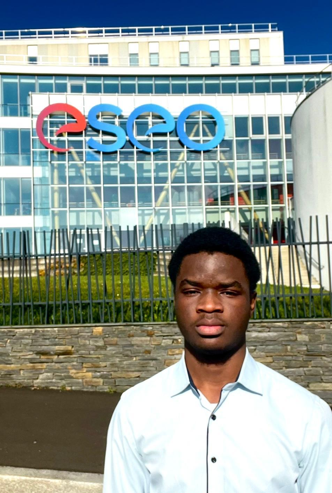

ORNEL
ZINSOU-PLY
Étudiant en 2ᵉ année à l'École Supérieure d'Electronique de l'Ouest (ESEO), passionné par la conception, l'optimisation et la sécurisation des systèmes informatiques performants. Ambitieux et curieux, je vise à développer des solutions innovantes pour soutenir la transformation numérique des entreprises.